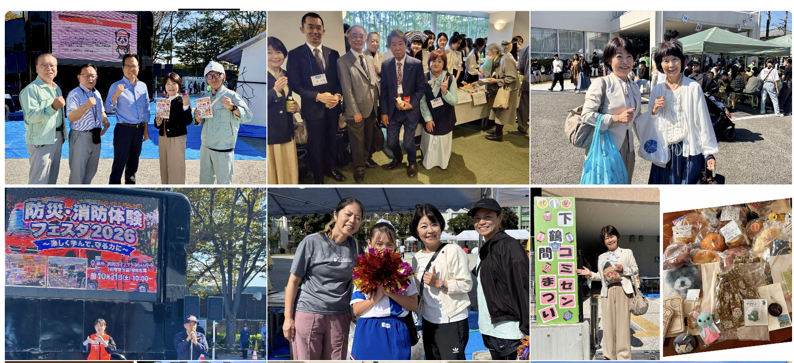
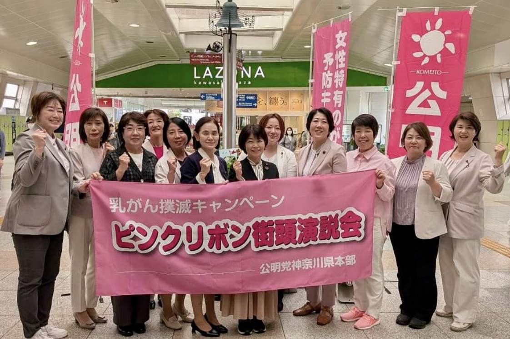

安心して暮らせる街
防災・減災、住まいの安心、脱炭素。持続可能な街づくりを進めます。
具体的な政策
防災・減災の推進／CO₂の削減／誰もが安心できる住宅施策／厚木基地騒音の軽減 など
MY VALUES
動画メッセージ準備中POLICY
防災・減災、住まいの安心、脱炭素。持続可能な街づくりを進めます。
防災・減災の推進／CO₂の削減／誰もが安心できる住宅施策／厚木基地騒音の軽減 など
子育て、高齢者、障がいのある方へ。必要な支援につながる地域を。
断らない相談窓口と包括的支援／子育て支援と女性の活躍／障がい者の地域生活／高齢者の社会参加 など
学ぶ機会を守り、一人ひとりの可能性を育む教育を進めます。
多様な時代に対応する教育／学力向上／いじめ・不登校・ひきこもり対策／特別支援教育の充実 など
中小企業や起業を支え、地域の産業と暮らしに活力を。
専門員による巡回相談／ビジネスマッチングと情報交換／起業支援／優良企業の表彰 など
ACTION & RESULTS
これまでの議会での提案・実現内容をご紹介します。
教育、子育て、医療、福祉など、70以上の課題に取り組んできました。
2015年4月開始
治療に伴う外見の変化と、購入費の負担を支援。
がん治療に伴う脱毛などに対応するためのウィッグの購入費を支援する制度です。外見の変化に伴う気持ちの負担と、購入にかかる費用の負担の軽減を図ります。
がん治療を受ける方の精神的・経済的な負担を軽くするため、ウィッグ購入費への助成を提案。2015年4月から助成が始まりました。
2014年6月議会で提案／2015年4月開始
2025年4月全校設置
教室に入りづらい子どもに、校内で学べる居場所を確保。
教室に入りづらい子どもが、学校の中で落ち着いて過ごしたり、自分のペースで学んだりできる場所です。教室以外にも学びや人とのつながりを持てるようにする支援です。
校内の学びと居場所になる「校内教育支援センター（サポートルーム）」を全小中学校へ拡充。不登校や教室への入りづらさを抱える児童生徒の学習を支えています。
2025年4月から全小中学校へ拡充
2014年度整備
明るさを確保しながら、電力消費や維持管理の負担を軽減。
市内の約12,000灯の防犯灯をLEDへ切り替える取り組みを推進。初期費用を抑えるリース方式の活用と、その後の防犯灯の増設にもつながりました。
2011年6月議会ほかで提案／2014年度の整備
2024年4月設置
複数の悩みを抱える方も、相談先を探し回らずに支援へ。
介護、障がい、生活困窮、家族の問題など、複数の困りごとを分野で切り分けずに受け止め、関係部署や支援機関が連携して対応する考え方です。相談者が窓口を探し回る負担を減らします。
2024年4月から、包括支援係を中心に全庁的に対応する相談窓口を設置。複雑な困りごとや制度の狭間にある課題を受け止め、企業・団体との連携も含めて支援につなぐ取り組みです。
2024年4月設置
2024年9月導入
欠席連絡や学校からのお知らせを、家庭のスマートフォンで確認できるように。
学校と保護者をつなぐ連絡用アプリです。学校からのお知らせやプリントをデータで受け取り、家庭から欠席などの連絡を行えます。紙の配布物を介さずに連絡でき、伝達の確実性と教員の負担軽減を図ります。
学校と家庭のデジタル連絡ツール「すぐーる」へ。2024年9月から導入され、外国語にも対応。お知らせやプリントデータの送付が可能になり、印刷・配布の負担軽減にもつながっています。
2024年9月導入
2017年4月設置
「子育てなんでも相談・応援センター」で切れ目のない支援へ。
妊娠中から出産後、子育て期までの相談を継続して受け止める拠点です。必要に応じて保健・医療・子育ての関係機関につなぎ、支援が途切れないようにします。
2017年4月、保健福祉センターに子育て世代包括支援センターが設置されました。妊娠期から子育て期まで、継続して相談・支援を受けられる拠点づくりを進めました。
2015年9月議会で提案／2017年4月設置
2017年4月開始
助産師の相談や家庭訪問で、妊産婦の不安を支援。
2017年4月から、助産師による相談・家庭訪問などの事業が始まりました。妊娠・出産・育児に不安がある方を、専門職が身近な場所で支える取り組みです。
2015年9月議会で提案／2017年4月開始
産後2週間・1か月の健診費用を支援。
出産後のお母さんの体の回復や心の状態、授乳などの状況を確認する健診です。不安や不調を相談し、必要な支援につなぐ機会になります。
出産後の体調や気持ちの変化を確認しやすくするため、産後健康診査への助成を導入。導入時は産後2週間と1か月の各健診に5,000円の助成が設けられました。
育児や授乳などの相談・支援を受けられる選択肢を整備。
産後ケアを導入し、出産後の母子を支える仕組みを整備。資料掲載時は産後4か月までの母子を対象としていました。その後の拡充は「産後ケアの利用方法とサービスを拡充」で紹介しています。
2024年4月拡充
妊娠8か月からの申請と、ショートステイ型の産後ケアを実現。
施設に宿泊して、休息を取りながら、授乳や赤ちゃんのお世話などの相談・支援を受ける方法です。日帰りや訪問だけでは支えきれない負担にも対応できるよう、選択肢を広げます。
利用対象を分かりやすく案内し、産後に限られていた申請を妊娠8か月から可能に。2024年4月からの拡充で、宿泊して支援を受けられるショートステイ型も始まりました。
2024年4月から拡充
性暴力の加害者・被害者・傍観者にならないための教育を充実。
自分と相手の体や気持ちを大切にし、性暴力の加害者・被害者・傍観者にならないための教育です。発達段階に応じて体の大切さや距離感、同意、困ったときに相談することなどを学びます。
命と体を大切にし、性暴力の被害を防ぐための「生命の安全教育」を推進。小中学校の教員に対する研修の充実に取り組んでいます。
新たにHPに子育て家庭向けに掲載された内容です。
子ども部と教育委員会の連携を進め、就学前からの支援につなげる取り組み。
子ども部の発達支援と教育委員会の連携を推進。相談支援ファイル「かけ橋」を就学前から配布し、発達障害の早期発見と支援を進めています。
発達障害のある子どもの子育てを支えるパンフレットを作成。
発達障害のある子どもの子育てを支援するため、パンフレット「発達支援ガイド」を作成しました。
必要なときに生理用品を使える学校環境を整備。
学校生活の中で生理用品が必要になった際の困りごとを減らすため、小中学校の女子トイレへの設置に取り組みました。
2018年9月提案
障がいへの理解を広げ、必要な配慮を地域に。
さまざまな障がいの特性や必要な配慮を知り、日常生活の中でできる手助けを行う取り組みです。特別な技術だけに頼るのではなく、地域の理解とちょっとした配慮を広げます。
障がいの特性や必要な配慮について学び、暮らしの中で支え合う「あいサポート運動」の導入を推進しました。
2018年9月議会で提案
空き家の問題に継続して取り組むための計画を整備。
登記簿などを調べても所有者が分からない、または所有者が分かっても連絡がつかない土地のことです。空き家とあわせ、管理や活用が進まない課題に計画的に対応します。
「大和市空家等及び所有者不明土地対策計画」の策定を推進。相談窓口による対応と、計画に基づく継続的な対策の両面から、空き家や所有者不明土地の課題に取り組んでいます。
2023年8月対象拡大
中学校卒業までの拡大に続き、高校卒業相当年齢まで所得制限なしで助成。
2014年7月に通院・入院の医療費助成が中学校卒業まで拡大。2023年8月からは、所得制限を設けず高校卒業相当年齢まで対象が広がりました。
2011年6月・2013年9月議会で提案／2023年8月に対象拡大
2025年度も実施
情報格差を減らすため、身近な場所で学べる機会を拡大。
市主催の初心者向け講習会と自治会への出張講習を実施。携帯ショップの講習も広報に掲載され、2025年度も初心者向け講習会が行われました。災害情報などを受け取るための支援にもつながります。
2024年度から／2025年度も実施
性暴力の加害者・被害者・傍観者にならないための教育を充実。
自分と相手の体や気持ちを大切にし、性暴力の加害者・被害者・傍観者にならないための教育です。発達段階に応じて体の大切さや距離感、同意、困ったときに相談することなどを学びます。
命と体を大切にし、性暴力の被害を防ぐための「生命の安全教育」を推進。小中学校の教員に対する研修の充実に取り組んでいます。
2024年開始
家族の世話を担う子どもを学校で見つけ、家庭への支援につなぐ仕組みを整備。
家族の介護や世話、家事などを日常的に担い、勉強・休息・友人と過ごす時間などに影響が出ている子どもや若者のことです。単なるお手伝いとして見過ごさず、本人と家族に必要な支援を考えることが大切です。
2024年から、小中学校の全教員を対象にヤングケアラー研修が始まりました。また、ヤングケアラーがいる家庭へのヘルパー派遣も2024年から開始されました。学業や健康への影響が懸念される子どもを、家庭ごと支える取り組みです。
ヤングケアラーについて（文部科学省） ↗2024年度から
学校が法律の専門家に相談できる体制を整備。
学校や教育委員会の問題について、法律の専門家として助言する弁護士です。いじめなどの対応で法的な整理が必要な際に、学校が専門的な助言を受けられるようにします。
2024年度から、学校で生じる問題に対して法的な観点から助言を受けられるスクールロイヤーが導入されました。学校や教員が専門的な支援を受けられる仕組みです。
2019年4月開所
特別な支援が必要な子どもと、学校・保護者を支える拠点を整備。
大和市の特別支援教育センターの愛称です。子どもの情緒面・行動面・学習面などの課題について、学校や家庭と連携しながら、指導や支援を行う専門の拠点です。
大和市特別支援教育センター「アンダンテ」の開設を推進。情緒面・行動面・学習面などに課題のある子どもへの指導や支援に取り組む専門拠点です。
2019年4月開所
特別支援教育センターの案内（大和市） ↗2014年度整備
文字だけでは読み取りが難しい子どもも、音声や画像を使って学べる環境を整備。
教科書の文章や挿絵を画面に表示し、文章に合わせて音声が流れる教材です。読まれている箇所が色で示されるため、耳で聞きながら目で追うことができます。文字の大きさや読む速さなども調整でき、読みの困難さに合わせて使えます。紙の文字を読むことに難しさがある児童生徒の学習を支える教材です。
文章の読み上げ、画像、強調表示で理解を助けるデイジー教科書を提案。全小中学校の特別支援学級に、対応ソフト入りのタブレットが2014年度中に整備されました。
2011年12月議会で提案／2014年度に整備
教材の説明（国立特別支援教育総合研究所） ↗2012年9月設置
見て理解しやすい授業を進めるため、全小中学校の特別支援教室に設置。
画像や動画、文字を大きな画面に表示し、画面に書き込みながら説明できます。言葉だけでは伝わりにくい内容を、図や動きで示す授業に活用します。
2012年9月に電子黒板が設置されました。画像などを使って具体的に説明し、発達障がいを含む特別な支援が必要な子どもが、学習に取り組みやすい環境を整えました。
2011年6月・12月議会で提案／2012年9月設置
2018年10月拡大
生後6か月から利用できるようにし、利用案内も一覧化。
2018年10月から、理由を問わず利用できる公立保育園の一時預かりが生後6か月からに拡大。園ごとの受け入れ年齢や料金をホームページで一覧にし、選びやすくしました。
2018年6月議会で提案／2018年10月拡大
2023年度
市役所・シリウス・ポラリス・イコーザなどで学べる機会を整備。
スマートフォンの基本操作を学び、必要な情報やサービスを利用できるよう、市役所・シリウス・ポラリス・イコーザなどでシニア向け講習会の開催を推進しました。
2023年度
2018年4月開始
保健師が一人ひとりと話し、妊娠中から育児の不安に対応。
2018年4月から、母子健康手帳の交付時に保健師が全妊婦と面談する体制が始まりました。早い段階から困りごとを聴き、必要な支援につなげる取り組みです。
2015年9月議会で提案／2018年4月開始
2017年4月刷新
利用できる支援を、項目ごとに探しやすく整理。
ひとり親家庭が受けられる制度や支援を分かりやすくまとめ、2017年4月に新たなしおりが作成されました。必要な情報にたどり着きやすくする改善です。
2016年9月議会で提案／2017年4月作成
2017年4月拡充
育児支援ヘルパーなどの支援対象の拡大を推進。
出産前後など、家事や育児の手助けが必要な家庭で、日常生活を支える支援です。家族だけで負担を抱えず、休息や育児に向き合うための時間を確保することにつながります。
産前産後のヘルパーを提案。2017年4月から事業の対象が広がり、出産後すぐに家事・育児の支援を利用できるようになりました。
2015年9月議会で提案／2017年4月対象拡大
2015年4月開設
空き家の困りごとを、専門の担当につなぐ窓口を整備。
2015年4月に相談窓口を開設。空き家の管理や活用などの相談を受け付け、必要な対策につなげる体制を整えました。現在はまちづくり部 建築指導課が窓口です。
2011年3月・2015年3月議会で提案／2015年4月開設
マイナンバーカードを使った証明書交付の利便性を向上。
戸籍に登録されている方の住所の履歴を記録した書類です。マイナンバーカードを使ったコンビニ交付で取得できる書類を増やし、窓口に行く手間を減らすことを目指す取り組みです。
住民票に加え、戸籍の附票をコンビニエンスストアで受け取れるようにする取り組みを推進。窓口に行く負担を減らし、生活に必要な手続きをしやすくする改善です。
2016年11月開館
文化創造拠点シリウスの整備と、舞台機能の充実を提言。
2016年11月にオープンした文化創造複合施設の整備を推進。ギャラリーの設置や舞台機能の充実を提言し、市民の芸術・文化活動の場づくりに取り組みました。
2012年6月議会ほかで提案／2016年11月開館
2016年度本格開始
教員一人に1台のパソコンを整え、校務の一括管理で負担を軽減。
出欠や成績など、学校の事務に必要な情報をまとめて扱う仕組みです。記録や集計の重複を減らし、教員の事務負担を軽くするために使います。
小中学校の教員が事務作業を効率化できるよう、パソコンの整備と校務支援システムの導入を提案。2016年度から本格的な運用が始まりました。
2014年3月議会で提案／2016年度本格開始
2016年度開始
プレママ・パパ教室で、男性講師による育児体験を実施。
2016年度から、プレ・イクメン講座として男性講師による育児体験などの講座を開催。出産前から家族で育児を考える機会を増やしました。
2014年12月議会で提案／2016年度開始
2050年までのCO₂排出量ゼロを目指す取り組みを推進。
省エネルギーや再生可能エネルギーの利用などで温室効果ガスの排出を減らし、森林などによる吸収量とのつり合いを目指す考え方です。地域の暮らしや公共施設でも取り組みを進めます。
気候変動への対応を地域の課題として位置づけ、脱炭素社会に向けた行動を進める気候非常事態宣言の表明につなげました。ロゴマークを作成し、市民への周知も進めました。
2024年4月開始
若い世代からの健康管理を、男女ともに考える機会を増やす。
性別を問わず、若いうちから自分の体や健康について知り、食事・運動などの生活や将来の妊娠・出産を含む生き方を考えることです。妊娠を予定している人だけでなく、若い世代が健康について学ぶ機会をつくる取り組みです。
2024年4月から、若い人向けのホームページ掲載やリーフレットの配架で啓発。栄養・運動などの健康管理を促し、生理・避妊・不妊などの相談先も案内しました。
2024年4月から
2025年1月から
住宅侵入被害への備えを、ホームページとステッカーで案内。
2025年1月から、今すぐできる対策や不審に感じたときの対応を市のホームページで案内。「見てるぞステッカー」も作成し、地域の防犯意識を高める取り組みを進めました。
2025年1月から
2015年度全校配置
いじめ・不登校などの教育相談と、担任への支援を専任で担う教員を配置。
学級担任を持たず、いじめや不登校などの教育相談、子どもへの対応、担任の支援などを専任で担う教員です。担任だけで課題を抱え込まない学校の体制づくりにつながります。
学級担任を持たない中核教諭の全校配置を要望。2014年度に3校で配置され、2015年度には全小学校へ広がりました。
2014年3月議会で提案／2015年度に全校配置
2024年1月開始の実績
自転車安全講習を条件に、全年齢対象の助成を推進。
自転車事故の被害を減らすため、安全講習会の受講を条件とする購入費助成を実現。資料では2,000円の助成を、2024年1月から2026年3月までの取り組みとして紹介しています。
2024年1月〜2026年3月の実績
心身の働きの衰えに早めに気づくための情報を発信。
年齢とともに心身の働きが弱まり、介護が必要になるリスクが高まった状態です。体の衰えだけでなく、気持ちや人とのつながりなどの変化にも目を向け、早く気づくことが大切です。
ホームページへの掲載などを通じ、フレイル予防を啓発。年齢とともに生じる心身の変化への理解を広げ、健康づくりのきっかけを増やす取り組みです。
2018年度から公表
2018年度より、市のホームページで優良工事を公表。
市のホームページで優良工事を公表する取り組みを提案し、2018年度より公表が始まりました。
2014年3月提案
保育サービスの利用について相談できる窓口を整備。
保育園や一時預かりなど、保育サービスを利用したい家庭の相談に応じ、情報を案内する相談員です。家庭の状況や希望に応じて、利用を検討するための情報を得られます。
保健福祉センター、子育て支援センター、こどもーる・つきみ野に保育コンシェルジュを設置。家庭に合った保育サービスを選ぶ際の相談につながる環境を整えました。
2012年12月・2014年3月議会で提案
2024年度から表彰
2024年度より、優良工事の事業者を表彰。
2024年度より優良工事の事業者を表彰。工事事業者のモチベーションアップと、良質な工事への取り組みが市民にも見える環境づくりを進めました。
2013年10月設置
空き店舗を活用し、気軽に立ち寄れる相談・交流の場に。
空き家や空き店舗の活用を提言し、2013年10月、中央林間駅西側の空き店舗に高齢者の相談所・居場所が設置されました。地域でのつながりを支える取り組みです。
2012年3月・2014年9月議会で提案／2013年10月設置
2013年3月提案
日本語の支援が必要な児童生徒の学習をサポート。
日本語の支援を必要とする児童生徒が、学校生活や授業に参加するための日本語などを学ぶ場です。日本語を学ぶことと、教科の学習に取り組むことの両方を支えます。
外国人児童生徒教育相談員・日本語指導員の派遣回数の増加と、国際教室の備品の充実を推進。日本語の習得を支え、安心して授業を受けられる環境づくりに取り組みました。
2012年6月・2013年3月議会で提案
骨の健康状態を確認できる検診の機会を整備。
骨の強さが低下し、骨折しやすくなる病気です。検診は骨の状態を確認する機会となり、必要に応じて医療や予防の相談につながります。
骨粗しょう症の予防・早期発見につなげるため検診を導入。40歳から70歳までの5歳刻みの女性が自己負担額1,500円で受診できます。（生活保護世帯は無償）
骨粗しょう症検診のご案内（大和市） ↗2013年度開始
学級の状態を把握し、子どもの困りごとに気づくための検査を提案。
子どもが学校生活をどのように感じているかを、質問紙を使って把握する検査です。学級へのなじみ方や友人関係などを知り、教員が声かけや学級づくりを考える手がかりにします。検査だけでいじめの有無を断定するものではありません。
学級集団の状態や成長を客観的に把握するQUテストを提言。2013年度から小学校5・6年生と中学校1・2年生を対象に実施が始まりました。
2012年9月議会で提案／2013年度開始
2016年度開始
道路の舗装修繕計画を整え、継続的な維持管理へ。
2015年度に舗装修繕計画が策定され、2016年度から実施が始まりました。日常的に使う道路を、計画を持って直していくための提案です。
2014年9月議会で提案／2016年度から実施
2012年9月協定締結
事業者が気づいた異変を、支援機関へつなぐ仕組みを整備。
日常の配達や訪問などで地域を回る事業者が、普段と違う様子に気づいたときに市などへ連絡する体制です。日常業務の中の気づきを、孤立の防止や必要な支援につなげます。
2012年9月、東京ガスと郵便局が市と見守りの協定を締結。日常の業務で高齢者の異変に気づいたときに通報する体制を整え、2015年1月には協定先が10社に拡大しました。
2012年3月議会で提案／2012年9月協定締結
2012年7月16日開始
文字を読むことに困難がある方のため、貸し出しと閲覧用パソコンを整備。
文章・画像・音声などを組み合わせ、読みたい箇所を探したり、音声を聞きながら読んだりできる図書です。紙の本の文字を読むことが難しい方も、自分に合った方法で内容に触れられるようにします。
2012年7月16日からデイジー図書の貸し出しが開始され、閲覧用のパソコンも設置されました。発達障がいのある方や弱視の方、高齢者、外国人市民などの読書を支える取り組みです。
2011年12月議会で提案／2012年7月開始
デイジー図書・教科書の説明 ↗2012年3月提案
80歳以上の一人暮らし世帯にも、人感センサーによる見守りを。
自宅での急な体調変化や異変に備え、通報機器や人感センサーなどを使って外部につなぐ仕組みです。一人暮らしの方などが、住み慣れた家で生活を続けるための備えになります。
慢性疾患などの条件があった緊急通報システムを、条件を設けず80歳以上の一人暮らし世帯まで拡大しました。自宅での急な異変への備えを広げる提案です。
2012年3月議会で提案
学校に通えない子どもの学びを支え、ルーターの無料貸し出しを推進。
登校が難しい児童生徒へのオンライン授業の活用と、Wi-Fi環境がない家庭へのルーター貸し出しなど、家庭からも学習できる環境整備に取り組みました。
進級・入学に向けた学校の準備期間を確保。
新年度に必要な準備の時間を確保できるよう、年度始業日を1日延期する取り組みを進めました。教員が子どもたちを迎える環境を整えるための改善です。
単独調理校の給食調理室で、暑さへの対策を推進。
給食を校内で調理する学校の調理室にエアコンを設置し、調理に携わる職員の作業環境の改善を進めました。
子どもたちや地域の利用者が使いやすい体育館に。
小中学校体育館のトイレの洋式化を推進しました。子どもたちや施設を利用する方の使いやすさに配慮した整備です。照明のLED化は「環境・街づくり・地域」で紹介しています。
発達障がいのある子どもとの関わり方を学ぶプログラムを推進。
保護者などが子どもの行動の特徴を理解し、具体的な声のかけ方、ほめ方、対応の工夫などを学ぶプログラムです。発達障がいのある子どもなどとの関わり方を学び、家庭で実践することを支えます。
保護者が子どもの行動の理解や関わり方を学べるペアレントトレーニングの導入に取り組みました。家庭での子育てを具体的に支えるためのプログラムです。
講座の案内（大和市） ↗相談窓口や支援センター「かならいん」の情報を、必要な方へ。
神奈川県の性犯罪・性暴力被害者のための相談支援窓口です。被害に遭った方が一人で抱え込まず、相談や医療など必要な支援につながるための窓口として周知しました。
ホームページへの掲載や市役所の女子トイレへのカード配架など、相談先を知るための機会を増やしました。被害に遭った方が支援につながりやすい環境づくりです。
医療と支援につながる体制づくりに取り組み。
性犯罪被害に遭った方が医療的な支援を受けられるよう、大和市立病院の支援協力病院への登録を推進しました。
香料などによる体調不良への理解を広げる情報発信を推進。
身の回りの化学物質に接することで、頭痛やだるさなど、さまざまな体調の変化が現れることがある状態です。香料などで困る方がいることを知り、周囲が配慮できる環境づくりにつなげます。
香料などで体調に影響を受ける方への配慮を、市民に知ってもらうための周知を推進。化学物質過敏症への理解を広げ、周囲の方が配慮しやすい環境づくりに取り組んでいます。
除草剤などを使う際の、周辺への配慮を呼びかけ。
住宅地での除草剤などの農薬使用について、市のホームページや広報やまとを通じて注意を周知しました。周辺に暮らす方の健康や生活環境への配慮を広げる取り組みです。
2025年9月21日開催
国際スポーツ＆ウエルネスウィークエンドを市が共催。
2025年9月21日、大和駅プロムナードから文化創造拠点シリウスを会場に、市民が健康づくりに触れるイベントを開催。心身の健康を考え、行動するきっかけづくりを進めました。
2025年9月21日開催
2014年9月提案
治療後のリハビリや退院支援を受けられる病床の整備を提案。
急性期の治療後、リハビリや経過観察、退院に向けた支援などを行い、自宅などでの生活に戻ることを支える病床です。下記は開設時の実績で、現在の病床構成とは区別しています。
市立病院で、経過観察・リハビリ・退院支援など在宅復帰を支える地域包括ケア病床51床の開設を推進しました。現在は全床が救急病床となっています。
2014年9月議会で提案／病床の現状は2026年11月確認
2013年3月導入
栄養調理室に微酸性電解水を導入。
水を電気分解するなどしてつくられ、食品の衛生管理などで使われる水です。ここでは、市立病院の栄養調理室で食中毒予防のために導入した取り組みを紹介しています。
入院患者の食中毒を防ぐため、市立病院の栄養調理室に微酸性電解水を導入することを提案。2013年3月に導入されました。
2012年6月議会で提案／2013年3月導入
性的マイノリティのカップルの関係を公的に認める制度を推進。
互いを人生のパートナーとして協力し合う二人の関係について、自治体が宣誓を受け付ける制度です。法律上の婚姻そのものとは異なりますが、関係を公的に認めることで、暮らしの中での理解や配慮を広げます。
一人ひとりの生き方を尊重するため、パートナーシップ宣誓制度の導入に取り組みました。性の多様性を認め合う地域づくりにつながる制度です。
市民が知り、理解するための情報を作成・配架。
性の多様性への理解を深めるパンフレットを作成し、配架を推進しました。誰もが自分らしく暮らせるよう、正しい理解を広げる取り組みです。
児童生徒の気持ちや性の多様性に配慮した学校環境へ。
性別にとらわれず、自分に合う服装を選びやすくする制服です。スラックスやスカートなどの選択肢を設けることなどにより、子どもの気持ちや多様性に配慮します。
性的マイノリティの児童生徒への配慮として、男女差のない体操服と中学校のジェンダーレス制服を推進。性別による固定的な選択に縛られない環境づくりです。
認知症の早期発見と、必要な支援へのつながりを後押し。
認知症が疑われる方や家族の困りごとを早めに受け止め、必要な医療や介護などにつなぐ支援です。本人や家族だけで抱え込まず、生活を支える体制を整えることを目指します。
認知症が疑われる方や家族を早い段階から支えるため、認知症初期支援チームの設置を推進しました。
2014・2015年度整備
地域の情報を届ける掲示板を、市の補助で更新。
自治会の情報発信に欠かせない掲示板を、2014・2015年度に312か所整備。地域の予定や暮らしの情報を、身近な場所で確認できる環境を整えました。
2014年6月議会で提案／2014・2015年度に312か所整備
2014年6月提案
補助金や年間予定など、自治会運営に必要な情報を整理。
各種補助金や年間の予定などを分かりやすくまとめた手引きへ刷新。自治会の役員や地域の担い手が、必要な情報を確認しやすくしました。
2014年6月議会で提案
2012年12月提案
駐車場の附置に関する条例の緩和で、老朽建物の更新を後押し。
一定規模の建物を建てる際、駐車場の設置を求める仕組みです。地域の実情に合わせて基準を見直すことで、老朽化した建物の建て替えなどを進めやすくする狙いがあります。
建物の老朽化・密集化への対応として、駐車場の附置等に関する条例の緩和を提案。建て替えを進め、不燃化・耐震化と地域の整備につなげる取り組みです。
2012年12月議会で提案
効果的な自治会活動について、他自治体と情報交換できる機会を整備。
自治会活動の効果的な取り組みを他自治体と情報交換するため、自治会フェスタなどを提案し、実現しました。
「エネファーム」の導入に対する助成を推進。
都市ガスなどから取り出した水素を使って家庭で発電し、その際に生じる熱をお湯づくりにも使う家庭用燃料電池です。電気と熱を効率よく利用するための設備です。
家庭での省エネルギーやCO₂削減につなげるため、家庭用燃料電池の設置助成を推進しました。資料掲載時の助成額は5万円です。
学校施設の省エネルギー化を推進。
小中学校体育館の照明のLED化を進めました。教育施設の環境整備であるとともに、エネルギー消費を減らす環境分野の取り組みでもあります。
踏切を渡らず小田急線に乗降できるよう、駅の利便性を改善。
小田急線中央林間駅の北東側に改札口（東口）が新設されました。田園都市線との連絡通路の混雑緩和や、駅へのアクセス改善につながる整備です。
ACTIVITY JOURNAL


14時からポラリスで開催。地域の皆さまとの対話の機会です。
地域行事や学びの場など、日々の活動をブログで報告しています。
YOUR VOICE MATTERS
暮らしの中の困りごとや、地域への思い。
身近な声を聴くことを、大切にしています。